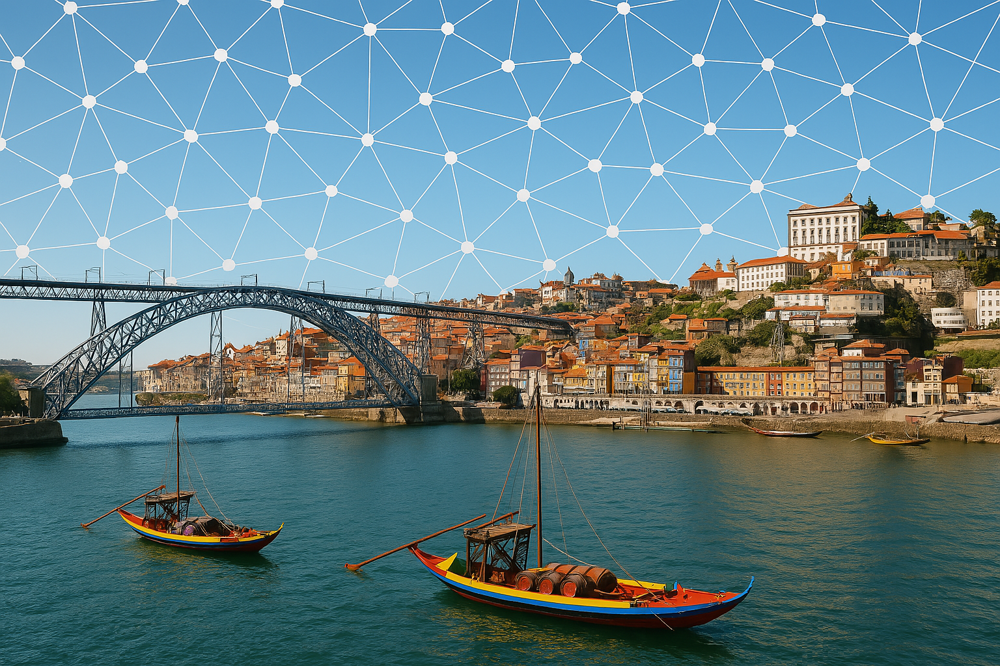

- Dates
- Keynote Speakers
- Call for Papers
- Schedule
- Accepted Papers
- Awards
- Organizers and PC
- Previous Workshops
22nd International Workshop on
Mining and Learning with Graphs
Monday, 15th September 2025, Porto, jointly with ECMLPKDD2025

Important Dates
- Paper submission deadline:
14.06.2025 19.06.2025
- Paper acceptance notification: 14.07.2025
- Camera ready submission deadline: tbd
- Workshop date: Monday 15. September 2025
- All deadlines expire 23:59 AoE
Keynote Speakers
-

Matthias Fey
kumo.ai
-
Matthias is the creator of PyTorch Geometric and a founding engineer at kumo.ai. He obtained his PhD in Machine Learning on graphs from the TU Dortmund University. His main area of interest lies in the generalization of Deep Learning methods to a wide range of applications related to structured data.
-
Rebekka Burkholz
Helmholtz Center CISPA
-
Rebekka is a faculty member at the CISPA Helmholtz Center for Information Security in Saarbrücken, where she leads the relational machine learning group. Her main goal to develop efficient deep learning algorithms that are robust to noise, require small sample sizes, and are generally applicable in the sciences. Her work is founded in theory with implications for real world applications and is often characterized by a complex network science perspective. Her favourite applications and sources of inspiration are currently the biomedical domain, pharmacy, and physics. Her group is supported by the ERC starting grant SPARSE-ML.
Call for Papers
This workshop is a forum for exchanging ideas and methods for mining and learning with graphs, developing new common understandings of the problems at hand, sharing data sets where applicable, and leveraging existing knowledge from different disciplines. The goal is to bring together researchers from academia and industry to create a forum to discuss recent advances in graph analysis.
In doing so, our aim is to better understand the overarching principles and limitations of current methods and to inspire research on new algorithms and techniques for mining and learning with graphs.
To reflect the broad scope of work on mining and learning with graphs, we encourage submissions that span the spectrum from theoretical analysis to algorithms and implementation to applications and empirical studies.
We are interested in the full spectrum of graph data, including but not limited to attributed graphs, labeled graphs, knowledge graphs, evolving graphs, transactional graph databases, etc.
We therefore invite submissions on theoretical aspects, algorithms and methods, and applications of the following (non-exhaustive) list of areas:
- Computational or statistical learning theory related to graphs
- Theoretical analysis of graph algorithms or models
- Semi-supervised learning, online learning, active learning, transductive inference, and transfer learning in the context of graphs
- Unsupervised learning and graph clustering
- Interesting pattern mining on graphs and community detection
- Graph kernels and metric learning on graphs
- Graph and vertex embeddings and representation learning on graphs
- Solving combinatorial problems on graphs with ML / data-driven combinatorial optimization
- Explainable, fair, robust, and/or privacy-preserving ML on graphs
- Statistical models of graphs and graph sampling
- Analysis of social media, chemical or biological networks, infrastructure networks, knowledge graphs
- Benchmarking and reproducibility aspects of graph-based learning
- Libraries and tools for all of the above areas
We welcome many kinds of papers, such as, but not limited to:
- Novel research papers
- Demo papers
- Dataset papers
- Work-in-progress papers
- Visionary papers (white papers)
- Appraisal papers of existing methods and tools (e.g., lessons learned)
- Relevant work that has been previously published
- Work that will be presented at the main conference (can be submitted with the regular 16-page limit of ECMLPKDD)
Submission Guidelines: Authors should clearly indicate in their abstracts the kinds of submissions that the papers belong to, to help reviewers better understand their contributions.
All papers will be peer-reviewed (single-blind).
Submissions must be in PDF, long papers no more than 12 pages long, short papers no more than 8 pages long, formatted according to the standard Springer LNCS style required for ECMLPKDD submissions.
References and appendix do not count towards the page limit.
The accepted papers will be published on the workshop website and will not be considered archival for resubmission purposes.
Authors whose papers are accepted to the workshop will have the opportunity to participate in a pitch and poster session, and the best two will also be chosen for oral presentation.
Papers should be submitted via CMT: https://cmt3.research.microsoft.com/ECMLPKDDWorkshopTrack2025. Please select the MLG: Mining and Learning with Graphs track.
Post-Workshop Springer Proceedings: High quality, original, non-dual-submitted papers will be invited to be published in post-workshop proceedings, assuming that ECMLPKDD offers them as in previous years.
Dual Submission Policy:
We accept submissions that are currently under review at other venues.
However, in this case, our page limits apply.
Please also check the dual submission policy of the other venue.
Tentative Schedule
| Timeslot | Activity |
|---|
| 14.00-14.00 | Welcome Note |
| 14.00-14.50 | Keynote 1 |
| 14.50-15.00 | Spotlights 1 |
| 15.00-15.50 | Poster Session 1 |
| 15.50-16.10 | Oral Presentation |
| 16.10-16.20 | Spotlights 2 |
| 16.20-17.10 | Poster Session 2 |
| 17.10-18.00 | Keynote 2 |
| 18.00-18.05 | Closing Remarks |
Program Committee
- Alessia Lucia Prete (University of Siena)
- Alice Moallemy-Oureh (University of Kassel)
- Anatol Ehrlich (University of Vienna)
- Andreas Roth (TU Dortmund)
- Antonio Longa (University of Trento)
- Celia Rubio-Madrigal (CISPA Helmholtz Center for Information Security)
- Christopher Blöcker (University of Würzburg)
- Christoph Sandrock (TU Wien)
- David B. Blumenthal (FAU)
- Duccio Meconcelli (University of Florence)
- Fabrizio Frasca (Technion)
- Federica Baccini (Sapienza University of Rome)
- Filippo Guerranti (Technical University of Munich)
- Florian Grötschla (ETH Zürich)
- Florian Seiffarth (University of Bonn)
- Francesco Giannini (Scuola Normale Superiore)
- Franco Scarselli (University of Siena)
- Giuseppe Alessio D'Inverno (SISSA)
- Ilie Sarpe (KTH Royal Institute of Technology)
- Ingo Scholtes (University of Würzburg)
- Johannes Borg Sandberg Petersen (TU Wien)
- Lorenz Kummer (University of Vienna)
- Luis Müller (RWTH Aachen)
- Manuel Dileo (University of Milan)
- Marek Dědič (Czech Technical University in Prague)
- Naheed Anjum Arafat (Howard University)
- Nicolò Navarin (University of Padova)
- Katharina Limbeck (Helmholtz Munich, TU Munich)
- Klaus Weinbauer (TU Wien)
- Pascal Plettenberg (University of Kassel)
- Patrick Indri (TU Wien)
- Pietro Bongini (University of Siena)
- Sagar Malhotra (TU Wien)
- Sara Bacconi (University of Siena)
- Shota Saito (UCL)
- Sourav Medya (UIC)
- Stefan Neumann (TU Wien)
- Tamara Drucks (TU Wien)
- Till Schulz (Max Planck Institute of Biochemistry)
- Veronica Lachi (FBK)
- Vincent Grande (RWTH Aachen University)
Previous Workshops
- 2024, Vilnius, Lithuania (co-located with ECMLPKDD)
- 2023, Torino, Italy (co-located with ECMLPKDD)
- 2023, Long Beach, USA (co-located with KDD)
- 2022, Grenoble, France (co-located with ECMLPKDD)
- 2022, Washington, USA (co-located with KDD)
- 2020, virtual (co-located with KDD)
- 2019, Anchorage, USA (co-located with KDD)
- 2018, London, United Kingdom (co-located with KDD)
- 2017, Halifax, Nova Scotia, Canada (co-located with KDD)
- 2016, San Francisco, USA (co-located with KDD)
- 2013, Chicago, USA (co-located with KDD)
- 2012, Edinburgh, Scotland (co-located with ICML)
- 2011, San Diego, USA (co-located with KDD)
- 2010, Washington, USA (co-located with KDD)
- 2009, Leuven, Belgium (co-located with SRL and ILP)
- 2008, Helsinki, Finland (co-located with ICML)
- 2007, Firenze, Italy
- 2006, Berlin, Germany (co-located with ECML and PKDD)
- 2005, Porto, Portugal, October 7, 2005 (co-located with ECML and PKDD)
- 2004, Pisa, Italy, September 24, 2004 (co-located with ECML and PKDD)
- 2003, Cavtat-Dubrovnik, Croatia (co-located with ECML and PKDD)
This page tries to be minimalistic in layout, bandwith, and used tools. It is hosted on github pages, using neat.css stylesheets, and bibtexparser to generate the lists of papers.